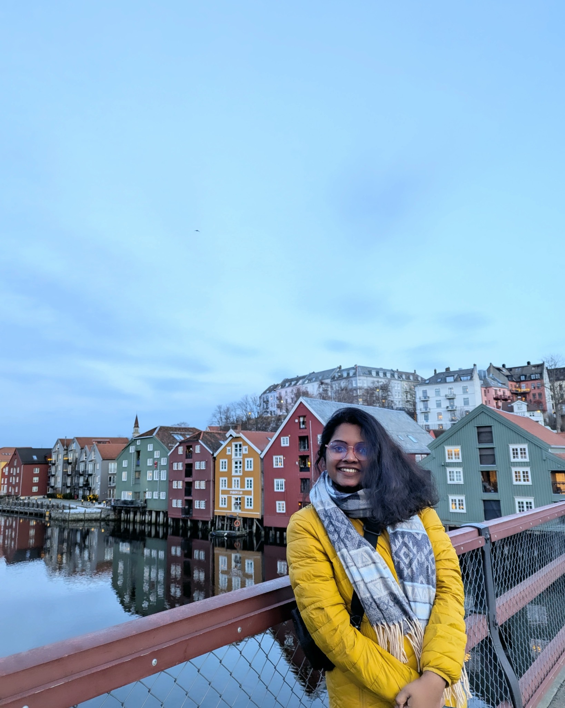

Between the ocean
and everyday life.
I’m Krishnaja, a PhD researcher in Trondheim. Here, I write about offshore wind, the research journey, and finding a little bit of home wherever life takes me.
Explore my journal ↘The journal
A little science. A little life. Always curious.

Hello, I’m Krishnaja.
I’m from Kerala, India, and currently call Trondheim, Norway, home. I’m a PhD candidate in the Department of Marine Technology at NTNU, working on the long-term reliability of nylon mooring lines through the NYMOOR project.
My research asks how we can better understand the safety of the mooring lines that hold floating wind turbines in place, particularly as loads and material condition change over time.
This journal makes room for both sides of my life: the technical questions that keep me curious, and the small moments of living and learning far from home.
Thanks for being here,
Krishnaja
Research with
an ocean view.
PhD candidate · NTNU Marine Technology
NYMOOR · Long-term reliability of nylon mooring lines
- Floating offshore wind & station-keeping
- Nylon mooring fatigue & deterioration
- Structural reliability & uncertainty
- Marine dynamics & numerical modelling
I’m interested in making reliability research understandable and useful beyond the equations.
Have a question or an idea?
For research conversations, collaborations, or simply a hello.